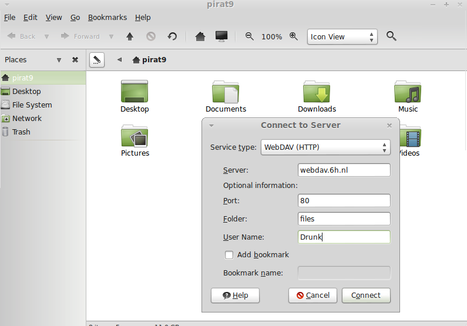

7.1. Acceso a ficheros#
Desde las opciones más clásicas, como FTP, NFS o Samba, a herramientas más actualizadas, apoyadas sobretodo por la tecnología HTTP/HTTPS, que nos permitirán crear servicios de alojamiento de archivos. En el último apartado, conoceremos algún ejemplo de Sistema Operativo concebido para la gestión de almacenamiento en red (NAS).
Debemos tener en cuenta las características de las opciones para compartir ficheros más clásicas en comparación con las opciones de edición en linea y concurrencia que tenemos hoy en día, las cuales eran impensables hace no tanto tiempo, y que son una de las bases del Cloud Computing.
7.1.1. Sistemas de ficheros en red#
- Si hablamos de redes locales (LAN) y compartir ficheros y recursos, tenemos varios sistemas de ficheros destacados:
Network File System (NFS): Sistemas UNIX-Linux.
Server Message Block (SMB/CIFS): Protocolo para compartir archivos, impresoras… entre sistemas Windows. Aunque es un protocolo propiedad de Microsoft, tiene algunas implementaciones libres, por ejemplo SAMBA en versiones Linux.
Linux incluye algunos comandos muy útiles de gestión remota de ficheros (rsync, scp…).

SAMBA es una opción bastante sencilla para poder compartir recursos entre máquinas Windows y Linux. No importa que SO sea el servidor y que SO actúe de cliente.
Importante
Sería un ejercicio interesante que compartieras ficheros entre MV Linux y Windows. Podrías incluso ubicar esos recursos compartidos en discos distintos al SO.
7.1.2. FTP#
FTP (File Transfer Protocol, “Protocolo de Transferencia de Archivos”), es un protocolo para la transferencia de archivos entre sistemas conectados a una red. Desde un equipo cliente se puede conectar a un servidor para descargar archivos desde él o para enviarle archivos, independientemente del sistema operativo utilizado en cada equipo. FTP está pensado para ofrecer la máxima velocidad en la conexión, pero no seguridad, ya que todo el intercambio de información, se realiza en texto plano.

Para solucionar este problema son de gran utilidad aplicaciones como scp y sftp, incluidas en el paquete SSH, o dotar de seguridad al propio servidor ftp con una capa SSL similar a la utilizada en HTTPS, alternativas que permiten transferir archivos pero cifrando todo el tráfico.
Advertencia
El servicio FTP puede trabajar de dos maneras (puedes encontrar una información más detallada en la Wikipedia):
ACTIVO
PASIVO
Es importante conocer las características de cada una, ya que podemos encontrarnos problemas de funcionamiento dependiendo de las características de seguridad de la red bajo la que estemos trabajando.
7.1.2.1. Clientes#
Un cliente FTP emplea el protocolo FTP para conectarse a un servidor FTP para transferir archivos, independientemente del SO del propio cliente o del servidor. Podemos encontrar clientes de varios tipos:
1. LINEA DE COMANDOS: Algunos clientes de FTP/SFPT básicos vienen integrados en los sistemas operativos(Windows,Linux). Ofrecen un acceso rápido y sin necesidad de instalación de ningún paquete. Las instrucciones de estos comandos son universales, independientes del SO.
Truco
Puedes encontrar servidores públicos de FTP donde probar los comandos, incluso de subida de ficheros (en https://dlptest.com/ftp-test/ puedes encontrar un servidor que admite acceso “público”).
INTEGRADOS EN EL NAVEGADOR: Muchos navegadores llevan integrados clientes FTP o permiten la instalación de plugins. En las versiones actuales o bien el soporte para FTP ha sido desactivado(https://www.trishtech.com/2021/04/how-to-re-enable-ftp-protocol-support-in-firefox/) o directamente ya no lo incluyen.
PROGRAMAS ESPECÍFICOS: Hay disponibles clientes con más funcionalidades y opciones, tanto para Windows como para Unix/Linux o Mac. Algunos ejemplos podrían ser:
{kind=link}
{kind=link}
7.1.2.2. Servidores#
- En este servicio debemos prestar atención a los siguientes elementos o propiedades:
Instalación y configuración del servicio sobre el SO correspondiente.
Crear los directorios donde se ubicarán los sitios FTP, con los PERMISOS ADECUADOS.
Creación de grupos y de directorios públicos asociados.
- Parámetros de conexión
Nº máximo de conexiones.
Limitar anchos de banda.
Limitar acceso por IP/ Hora..
- Tipos de usuari@/autenticación.
Usuari@s locales
- Usuari@s virtuales. Varias posibilidades.
Ficheros generados con el paquete db-util (al final del enlace puedes encontrar como https://help.ubuntu.com/community/vsftpd)
Ficheros generados con htpasswd.
Bases de datos (MySql..)
Servicios de directorio (LDAP)
Autorizar acceso anónimo
Enjaular a l@s usuari@s (CHROOT).
Soporte para conexiones seguras mediante SSL(instalación de certificados).
SERVIDOR FTP EN LINUX
Utilizaremos VsFTP (manual en la web o también la documentación oficial ), teniendo en cuenta lo siguiente:
# apt-get install vsftpd
La configuración bastante sencilla
Permite servidores virtuales (por IP)
Puede incluirse cifrado (FTP seguro)
Enjaular usuarios (atención writeable chroot)
7.1.3. WebDAV(HTTP/S)#
A través de los protocolos HTTP/HTTPS podemos configurar el acceso remoto a sistemas de ficheros en nuestro/s servidor/es, con protocolos más modernos que FTP. WebDAV(Web Distributed Authoring and Versioning).
{kind=link}
Tal y como dice la documentación oficial de Apache, el objetivo de este protocolo (o más concretamente EXTENSIÓN DE PROTOCOLO) es conseguir que la web (http/https) permita el acceso con permisos de escritura a recursos publicados. Con él podemos hacer accesibles partes de nuestro sitio web como un directorio remoto.
Advertencia
La directiva DirectoryIndex en Apache o Autoindex en NginX para listar el contenido de un directorio del servidor suele ser una fuente de errores en combinación con WebDAV. La recomendación general es desactivar esa directiva para poder utilizar los módulos dav
7.1.3.1. Configuración en Apache#
Los pasos a realizar, extraídos del siguiente manual, son:
Activar los módulos correspondientes.
# a2enmod dav dav_fs
Añadir en nuestra configuración de Apache el módulo (sobre un directorio/location) → DAV On
- Añadir algún método de autenticación
¿basic/digest?
¿IP?
Sin autenticación Acceso libre
Atención a permisos/propietario
Limit/LimitExcept para que solo pida usuario/passwd en el caso de acceder a ficheros via dav (https://httpd.apache.org/docs/2.4/mod/mod_dav.html#page-header).
Reiniciar apache
Probar la conexión con un cliente(Linux|Windows|MAC).

{kind=link}
{kind=link}
{kind=link}
7.1.3.2. Configuración en NginX#
Los pasos a realizar en este caso puedes encontrarlos en la documentación oficial, son:
{kind=link}
7.1.4. Control de versiones#
Un control de versiones es un sistema que registra los cambios realizados en archivos a lo largo del tiempo, de modo que puedas recuperar versiones específicas más adelante. Aunque su origen era el código fuente compartido, maneja cualquier tipo de archivo. A estos sistemas de almacenamiento se les suele denominar repositorios. Dos de los ejemplos más populares(trabajando ambos bajo los protocolos HTTP/HTTPS) para el control de versiones son:
Subversion(https://subversion.apache.org/)
GIT (https://git-scm.com/)
{kind=link}
Advertencia
¿Conoces algún repositorio público en la web?¿Qué sistema de control de versiones emplean?¿Para que crees que se utilizan estos repositorios?
Hay multitud de opciones gratuitas para tener un repositorio en la web. Pero…¿Si queremos nuestro repositorio propio?. Montar nuestro propio sistema de control de versiones no es demasiado complejo. Puedes encontrar ayuda en el video a continuación o en el siguiente tutorial.
La manera de trabajar y comunicarse con el repositorio depende del programa bajo el que lo hayamos instalado. En el ejemplo de GIT el flujo de trabajo(workflow) sería algo parecido a la siguiente imagen.

Advertencia
En los repositorios se utilizan términos como TRUNK, TAG o BRANCH. Debemos conocer su significado para entender correctamente como trabajan los sistemas de control de versiones.
{kind=link}
Para comunicarse con los repositorios tienes varias opciones, además de la linea de comandos, gran cantidad de Clientes GUI que nos van a facilitar el trabajo entre nuestro Working Directory y el repositorio.
Conociendo su funcionamiento, ya podemos configurar nuestro equipo para tener un WD(working directory) vinculado con cualquier repositorio publico disponible en la web.
Importante
Un buen ejercicio podría consistir en crear una cuenta en algún sitio público que ese GIT (github, gitlab, gitbook….), crees tu primer repositorio y lo conectes a un cliente GIT para trabajar con él. Piensa en las utilidades que podría tener este repositorio:
Alojar el código fuente de tus proyectos de IAW.
Copias de seguridad y configuraciones de tus BD.
Seg de tus ficheros de conf. de SER.
Tu documentación, anotaciones de distintas categorías.
7.1.5. Cloud Computing#
Tod@s conocemos, y probablemente utilicemos, la computación en la nube. El acceso a los recursos desde cualquier parte, y con las posibilidades de edición y sincronización de nuestros datos ha hecho que sea el sistema de trabajo de cualquier empresa, independientemente de su ámbito de actuación.

De nuevo, como en el punto anterior..¿Si queremos nuestro servidor propio..?:
Vamos a montar nuestra nube local, con el apoyo de docker, y con las herramientas NEXTCLOUD y COLLABORA (también puedes probar con ONLYOFFICE). Puedes utilizar lo indicado en el siguiente manual
{kind=link}
Importante
- En la actualidad muchos de los servidores y servicios se encuentran ubicados en servicios remotos (cloud), como pueden ser:
Amazon Web Services
Microsoft Azure
Google Cloud
En ellos podemos crear instancias de MV/Cotenedores, publicar servicios, gestionar almacenamiento remoto, BBDD, crear infraestructuras de red…. También existen alternativas para crear nuestro propio cloud, como OpenShift
7.1.6. Sistemas Operativos NAS#
En este apartado nos referimos a distribuciones Linux diseñadas para almacenamiento conectado a la red NAS, siglas de Almacenamiento Conectado en Red (Network Attached Storage). Muchos de estos SSOO tienen un carácter gratuito, open-source y software libre (basado en licencia BSD) y nos permiten administrar soportes de almacenamiento accesible desde red, por ejemplo para almacenamientos masivos de información, música, backups, etc. Dos ejemplos:
- FreeNAS: https://www.freenas.org/
- OpenMediaVault (necesita menos recursos para funcionar): https://www.openmediavault.org/
{kind=link}
{kind=link}
Para poder practicar con estas distribuciones podemos hacer uso de la virtualización. Vamos a simular nuestro NAS, como si hubiéramos comprado uno. Para ello debemos dar los siguientes pasos:
- 1 Crearemos una MV
OpenMediaVault/FreeNAS ISO
Atentos-as a los requisitos y al tipo de la MV
- 2 Añadimos disco/s duro/s a nuestra configuración (nuestro NAS)
Podemos añadir los que queramos y darle estructura de RAID/LVM¿?¿
3 Configuramos la red de la MV para hacerlo pública
- 4 Primeras tareas
Crear pool
Usuarios/grupos
- Configuramos el/los servicios que queramos proporcionar
SMB
WebDAV
FTP
Git
Importante
Configurar tu propio NAS instalando uno de los SO comentados en una MV, añade tantos DD virtuales como quieras y “juega” con las opciones de servicios, uso y seguridad que te ofrecen.